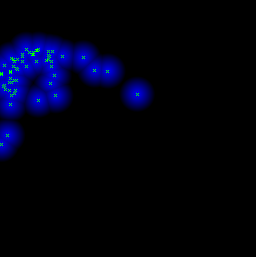
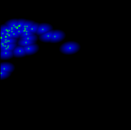
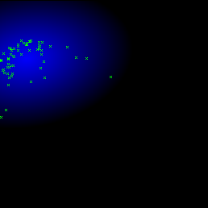
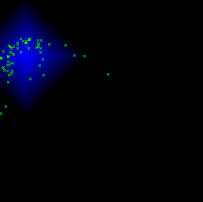
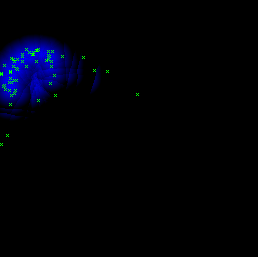

Current version: 0.3 Developer(s): Danilo J. S. Bellini
Accepts categorical maps: no Needs absence points: no
Author(s): Mauro E. S. Muñoz, Renato De Giovanni, Danilo J. S. Bellini
Carpenter G, Gillison AN, Winter J (1993) DOMAIN: A flexible modeling procedure for mapping potential distributions of animals and plants. Biodiversity and Conservation 2: 667-680.
Generic algorithm based on environmental dissimilarity metrics. When used with the Gower metric and maximum distance 1, this algorithm should produce the same result of the algorithm known as DOMAIN.
Parameters (3):
Data type: Integer Domain: 1, Typical value: 1
Meaning: Metric used to calculate distances: 1=Euclidean, 2=Mahalanobis, 3=Manhattan/Gower, 4=Chebyshev
Data type: Integer Domain: [0, oo) Typical value: 1
Meaning: Nearest 'n' points whose mean value will be the reference when calculating environmental distances. When set to 1, distances will be measured to the closest point, which is the same behavior of the previously existing minimum distance algorithm. When set to 0, distances will be measured to the average of all presence points, which is the same behavior of the previously existing distance to average algorithm. Intermediate values between 1 and the total number of presence points are now accepted.
Data type: Real Domain: 0, Typical value: 0.1
Meaning: Maximum distance to the reference in the environmental space, above which the conditions will be considered unsuitable for presence. Since 1 corresponds to the biggest possible distance between any two points in the environment space, setting the maximum distance to this value means that all points in the environmental space will have an associated probability. The probability of presence for points that fall within the range of the maximum distance is inversely proportional to the distance to the reference point (linear decay).
The following images show models in the environmental space (temperature x precipitation) generated with the same input (Furcata boliviana localities dataset) but with different parameters. Notice the different shapes produced by each metric:
|  |
| fig. 1: euclidean distance to nearest point, max distance = 0.05 |
|
| fig. 2: gower distance to nearest point, max distance = 0.05 |
|  |
| fig. 3: mahalanobis distance to nearest point, max distance = 0.05 |
|  |
| fig. 4: mahalanobis distance to the centroid, max distance = 0.3 |
|  |
| fig. 5: gower distance to the centroid, max distance = 0.15 |
|  |
| fig. 6: euclidean distance to the centroid of the 10 nearest points, |
max distance = 0.05